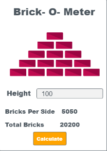
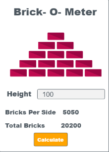

HI!I AM SAPTARSHI MANDAL AND THIS IS MY WEBSITE
My Hobby is Gardening

I am Saptarshi Mandal.I raed in class 5.My hobby is gardening.So here are a few words about gardening and why I like it!
Gardening ranges in scale from fruit orchards, to long boulevard plantings with one or more different types of shrubs, trees, and herbaceous plants, to residential back gardens including lawns and foundation plantings, and to container gardens grown inside or outside. Gardening may be very specialized, with only one type of plant grown, or involve a variety of plants in mixed plantings. It involves an active participation in the growing of plants, and tends to be labor-intensive, which differentiates it from farming or forestry.
I like gardening because I can spend lots of time among trees.Whenever I get some leisure time I rush to the garden and enjoy the lush greenery of the plants and trees.I water the plants daily.Also while I am in the garden few cats come and I also play with them.Everyday several flowers bloom.Sometimes more than 50!But the oldest trees are 2 christmas trees which are 20 years of age.Among those 100 plants and trees there are 24 rose plants.
My Favourite Hobby
My Work
Stargazing
One of my favourite hobbies is stargazing, every night I go to the roof with my telescope and watch stars and the Moon. Some pictures of the things I have observed will be given soon!
I also have some apps related to space !They are given below!
ISS LocatorYoutube

I have a youtube channel which has nearly 40 videos and 190+ subscribers. It is mostly about recitation and coding apps and games. I first created the channel on February 2019. Some videos even have more than 2K views, with the highest being 5.1K.
You can watch that video here!
Also I have many coding videos, with the highest viewed is Random Ball Game (390 views)
You can play the game at this link
If you want to watch the video click here
In youtube I will also upload the video for this website.
Trailer 1 has been uploaded on 26th April 2021
You can watch the video just below this text!
Trailer 2 to be uploaded on 2nd May 2021
Main Video to be uploaded on 15th May 2021
Games I Play
Playing is a good thing, and I play both indoors and outdoors games. Cricket, Football and sometimes I also play Badminton. Talking about indoor games, Chess is my most favourite also I play Carrom. Among all these games I like Cricket and Chess the most. I ususally play chess online through Chess24.
Visit my Chess24 profileTalking about Cricket, it is my most favourite sport, MS Dhoni is my favourite cricketer. I watch cricket matches live on the TV and everyday play cricket.
Coming to chess, My average rating is 1390 (Bullet, Blitz and Classic formats).I love playing chess and I always play it in the morning.One day I even defeated a FIDE master!
Games
 


ChatBots
My Personal Assistant
COVID-19 Chatbot
Einstein ChatBot
Oslo City ChatBot
Websites Built By Me
Some of my web and play store apps are present in this websiteMy Inspiration

Mahendra Singh Dhoni , is a former Indian international cricketer who captained the Indian national team in limited-overs formats from 2007 to 2016 and in Test cricket from 2008 to 2014. Under his captaincy, India won the inaugural 2007 ICC World Twenty20, the 2010 and 2016 Asia Cups, the 2011 ICC Cricket World Cup and the 2013 ICC Champions Trophy. A right-handed middle-order batsman and wicket-keeper, Dhoni is one of the highest run scorers in One Day Internationals (ODIs) with more than 10,000 runs scored and is considered an effective "finisher" in limited-overs formats.He is widely regarded as one of the greatest wicket-keeper batsmen and captains in the history of the game. He was also the first wicket-keeper to effect 100 stumpings in ODI cricket. Dhoni also holds numerous captaincy records such as the most wins by an Indian captain in ODIs and T20Is, and most back-to-back wins by an Indian captain in ODIs. He took over the ODI captaincy from Rahul Dravid in 2007 and led the team to its first-ever bilateral ODI series wins in Sri Lanka and New Zealand. In June 2013, when India defeated England in the final of the Champions Trophy in England, Dhoni became the first captain to win all three ICC limited-overs trophies (World Cup, Champions Trophy and the World Twenty20). After taking up the Test captaincy in 2008, he led the team to series wins in New Zealand and the West Indies, and the Border-Gavaskar Trophy in 2008, 2010 and 2013. In 2009, Dhoni also led the Indian team to number one position for the first time in the ICC Test rankings. In 2013, under Dhoni's captaincy, India became the first team in more than 40 years to whitewash Australia in a Test series. In the Indian Premier League, he captained the Chennai Super Kings to victory at the 2010, 2011 and 2018 seasons, along with wins in the 2010 and 2014 editions of Champions League Twenty20. In 2011. In 2016, a biopic M.S. Dhoni: The Untold Story was made on his life and his cricket career up to the Indian team's win at the 2011 Cricket World Cup.In June 2015, Forbes ranked Dhoni at 23rd in the list of highest paid athletes in the world, estimating his earnings at US$31 million.MS Dhoni announced his retirement from international cricket on 15 August 2020.